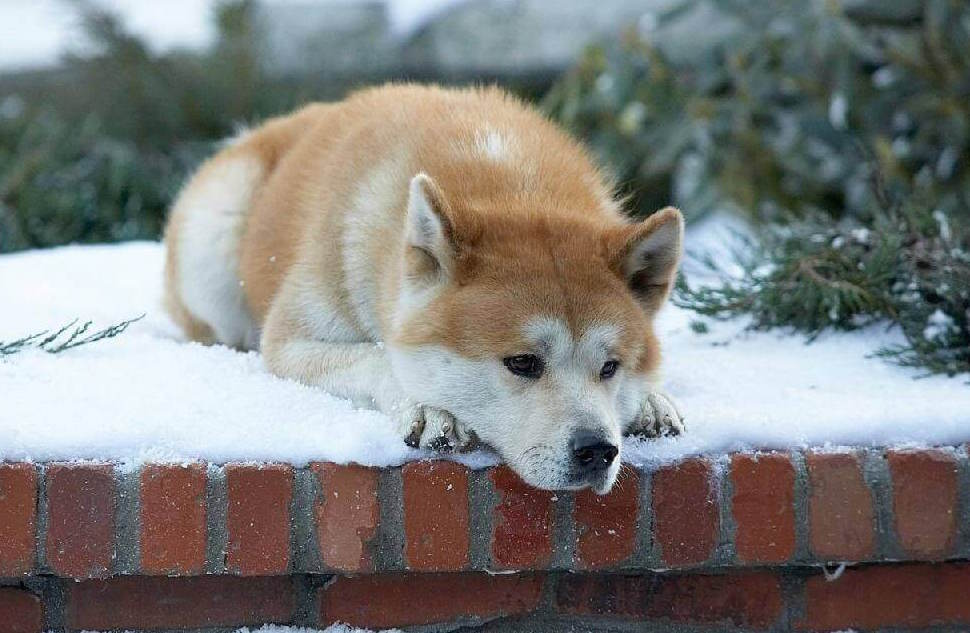

Historia
fue un perro japonés de raza akita, recordado por haber esperado a su amo, el profesor Hidesaburō Ueno, en la estación de Shibuya, cerca de nueve años después de la muerte de este. Actualmente se lo conoce como Chūken Hachikō (忠犬ハチ公), ‘el perro fiel Hachikō’ (hachi: "ocho"; kō: sufijo utilizado por duques de la antigua China; de este modo, el nombre Hachikō podría traducirse como "Señor Ocho").

| Nombre | Hachikō |
|---|---|
| Raza | Akita Inu |
| Sexo | Macho |